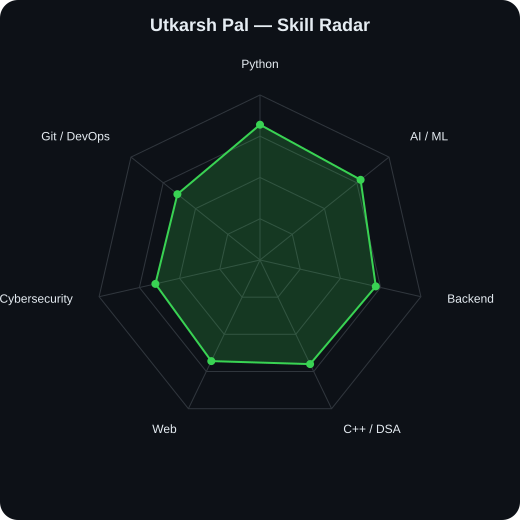
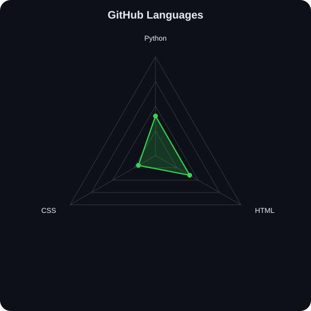

Utkarsh Pal - GitHub Profile
> Utkarsh Pal
AI/ML • Full-Stack • Cybersecurity
Building AI-powered projects
the radar
Self-rated

GitHub language mix

AI/ML • Full-Stack • Cybersecurity
Building AI-powered projects

